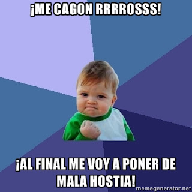

Do not fuck with us.
Cuando alguien te jode (pero no de eso que es de vida o muerte, no), cuando te joden poco a poco, con comentarios porculeros tolerables que pueden pasar pero que no paran; cuando te tocan la oreja por detrás y hacen como que no han sido ellos, y al girarte repiten... Y lo que me revienta es cuando me vienen haciendo haspavientos y me dicen que la colleja me la comí yo solito por meterme en medio... Se ríen por lo bajini con sus coleguillas y es como una droga, ¡ya no pueden parar! Se crecen y planean una que toque más los cojones. Todo va hacia una dirección concreta: hacia el cachondeo continuo.
Como en toda situación, existe una secuencia de acontecimientos lógica, es decir, inevitable: la mala virgen crece en mi seno, me muerdo el labio de un lado, luego del otro, empiezo a gruñir, se me aprietan los puños y...

Y se medio callan por un ratito. Sin embargo, resulta inevitable que vuelvan poco a poco, con la confianza de ya haber dado por saco antes, hasta que reviento otra vez. Este ciclo se puede mantener, con variaciones en la frecuencia y en la amplitud, hasta que se harte la madre que parió a todos.
Solo hay un desenlace posible: soltar una castaña que se queden todos callados con los ojos abiertos y, al primero que pregunte por qué, otro par de castañas más pistonudas de cada lado. Siempre, creedme, acaban revoloteando incapaces de explicar cómo alguien puede ser tan cafre: no intentes, no lo querrán comprender. Inmediatamente, échalos lejos, suficientemente lejos, asegúrate de que no pueden volver a merodear tus inmediaciones, porque volverán. A modo de golpe de estilo y como despedida, mientras los agarras por la pechera puedes soltar un arrogante:
DO NOT FUCK WITH US.
Tyler Durden
Y para mentes más ilustradas:
"Ningún hombre es demasiado bueno para gobernar a otro sin su consentimiento."
Abraham Lincoln
"Pueblo que ignora su historia, pueblo que está condenado a repetirla."
Abraham Lincoln
“Cuando la injusticia es ley, la desobediencia es deber."
“He hecho por mi país, por la humanidad, todo lo que pude, y ahora entrego mi alma a dios; mi hija, a mi país.”
Abraham Lincoln
“El sistema de la banca nosotros lo hemos reprobado por igual. Yo lo contemplo como un borrón en todas nuestras constituciones, que, si no se protegen, terminará en su destrucción, ya que ya están siendo golpeadas por los jugadores corruptos, y está arrasando en su progreso, la fortuna y la moral de nuestros ciudadanos.”
Thomas Jefferson
“Cuando alguien asume un cargo público debe considerarse a sí mismo como propiedad pública”
Thomas Jefferson
"Pienso que las instituciones bancarias son más peligrosas para nuestras libertades que ejércitos enteros listos para el combate. Si el pueblo americano permite un día que los bancos privados controlen su moneda, los bancos y todas las instituciones que florecerán en torno a los bancos, privarán a la gente de toda posesión, primero por medio de la inflación, enseguida por la recesión, hasta el día en que sus hijos se despertarán sin casa y sin techo, sobre la tierra que sus padres conquistaron"
Hay quien dice que de Thomas Jefferson.
Relacionadas:
http://delightfulobservaciones.blogspot.co.uk/2012/09/de-un-punado-de-ovejas-el-mejor-de-los.html
http://delightfulobservaciones.blogspot.co.uk/2012/11/no-es-justo-yo-fui-la-huelga.html